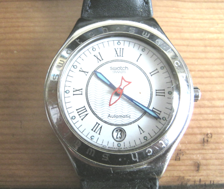
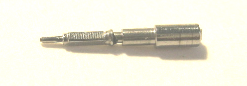
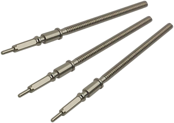
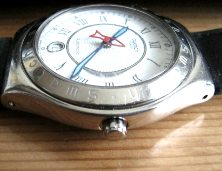

Poisson Rouge の帰還
いきさつ

Poisson Rougeは赤い魚型の秒針が特徴的な自動巻のSwatchです。
自動車のなかで何かに引っかけたらリューズがとれ、時計も止まってしまったと私のところにやってきました。
私は町の時計屋さんではないのですが、預かることにしました。
見ると巻き芯は根元から折れてリューズはなくなっています。どうやら普通の巻き芯ではないようです。またテンワの動きはシースルーで目視できますが、秒針はうごきません。

Swatchは使い捨てが原則の製品だそうで、販売店経由でも「修理」を受け付けてもらえないし部品の供給もうけられないという話です。通常ならここで諦めるしかないのですが、そこを何とかしてみるのもおもしろいだろうとおもいました。
調査
早速検索すると既に何人かの方々が取り組んでおられますようです。またこちらのように、やったらうまくいったという報告もあり、参考になりそうな画像もありますので何とかなるかもしれません。
Wikipediaには、Swatchの自動巻きはETA社のムーブメント、ETA2842を使用していると記載があります。これはSwatchに限らず、スイス時計産業の特徴である分業体制のためと考えられます。つまり部品をいくつかの会社が製造しそれをアッセンブルする会社さらに販売する会社と製品にいくつもの会社が関わる、あるいは分業する構造があるのです。またSwatchをはじめ各社の製品に組み付けられるETAのムーブメントにしても、全く既成品ではなく単純化したり高級化したりとコストや商品性に合わせたカスタマイズすることもよくあるそうです。
今回破損した他ではあまり見かけないリューズ一体型巻き芯はSwatchの特注部品と思われますが、これもSwatch販売店に注文しても入手できない、一般に流通していないものだそうです。
そこで一般に流通して入手できるETAの汎用部品で今回の故障は修理できるかもしれません。もし金額が許せばETA2842の新品をそっくり入れ替えるのもいいかもしれません。
その前に、止まったままの時計を調べることにしました。肝心の本体に目に見えない故障が起きている可能性もあるからです。秒針が止まったままですが、しばらく放置していると十秒くらいは動いていることがわかりました。巻き芯が破損した際にショックでなにか引っかかっているようです。そこで破損した巻き芯の頭をボールペンの先端で軽く押しこみました。すると軽い手応えがあり、秒針がうごきはじめました。これで時計本体は動くことが確認できました。
部品の手配
この種の時計部品の手配には、大阪の中村時計部品材料店を利用しています。念の為、ETA 巻き芯 で検索すると、三番目にヒットしました。1番目の2番めはAmazonで、どちらも品切れでした。
その販売サイトを見て回ると、ETA2842の本体も巻き芯も扱いがありませんでした。しかしETAの28シリーズの巻き芯はどれも形状がよく似ていることに気がつきました。また破損した巻き芯とサイトの部品写真を比べてみるとこれも先端部分はそっくりでした。これは共通部品なのかもしれません。

ETA28シリーズについてしらべると、自動巻か手巻きか、カレンダーの有無でバリエーションを構成していました。これなら中心的機構部品の巻き芯が共通部品になっている可能性が大きいでしょう。見分けがつかないくらい似ているけど、実は微妙に違っていて使い回しができないなんて、時計屋さんも怒るでしょう。
そこでベストロングセラーのETA2824-2の巻き芯と汎用リューズを購入して実機で試してみることにしました。
中村時計材料部品店から郵便で届いた巻き芯を、まず破損した巻き芯と並べて目視で確認しました。2つ並べても先端部分の形状の違いはわかりませんでした。
そこでリューズと仮組みして挿入し動かしてみたら、ゼンマイの巻き上げ、カレンダー日付変更、時刻合わせのすべてが問題なくできました。Swatchの純正部品は入手困難でも、代わりの部品はこのように入手できますので修理はあながち不可能ではないようです。
巻き芯の長さの調整
今回のような一般部品の巻き芯は、いくらか寸法が長く作られています。そして組み込む時計に合わせて長さを調整してつかいます。Poisson Rauge の場合は約2.3mm短くする必要がありました。まずニッパでやや長めに切り、そこからヤスリ（耐水ペーパ#600）で仕上げました。何回か現物合わせしてぴったりにしました。破損した巻き芯に残っていたパッキンのＯリングを軸に取り付け、ネジはロックタイトで接着しました。ロックタイトがないときはアロンアルファでもいいらしいですが二度と外れないらしいです。

リューズはオリジナルよりもやや小さい、周囲のぎざぎざが少ないものを選びました。やや柔和な外見になりました。
結論
まず結果から、豊富な修理情報と部品が入手できたおかげで予想以上にうまく修理できました。いくらかの工具とアマチュア級の腕があればそれほど手間もかからず元通りになるでしょう。
ただし作業自体は、誰でもできる簡単な作業ではありません。この文章をお読みの皆さんが各自判断してください。
余談
それは私でもできますか？このような質問を受けることがあります。しかしお会いしたばかりの人のことはわかるわけがありません。占い師でも超能力者でもありません。
普通のひとでもできますか？これも難しい質問ですね。
そもそも普通っていう条件が一番わかりにくい。その他大勢って集団が普通じゃないから。
でも無作為に集めた人うち何％できるかをお話できるとわかりやすい答えになるでしょうか？でも調査が大変そうですね。だから特殊な人たちへのアンケートは意味もあるし面白い結果が出るけど、そこの全員を対象とすると選挙みたいに
だからこんな質問には、『できる人はできるができない人にはできない』とお答えするしかないだろうと思っています。
できるかできないかを心配する人の心理 このような質問をする人たちはきっと成功したり失敗したりするのを心配しているのでしょう。言葉を変えれば失敗したくない気持ちが強すぎる、後悔の気持ちが強すぎるのです。『もう失敗したくない』というキャッチフレーズの広告を見かけますが、このような人はさぞかしたくさんおられるのでしょう。
だから先の質問は、『失敗せずにできますか？』という気持ちが現れたことばではないでしょうか。
世の中にはさまざまな事柄があります。うまくできる人も失敗する人もいます。
しかし一番多いのは、はじめのうち何回か失敗した結果うまくできるようになる人が一番多いのではないかと思います。はじめからうなく行く人も、最後までうまくできない人もごく少数の例外だと思います。
失敗して反省して工夫して改善して、失敗から学んでできるようになる。失敗は成功のもとですね。最初からうまくできる人は、反省なし工夫なし改善なしですからそのうち大きな失敗をするかもしれません。いえいえそうではなく、はじめからうまくできる人は見えないところでたくさん失敗しているのですね。
問題なのは、失敗をしないために挑戦を避けたり、または失敗を忘れようとすると、学習も少なく、経験もキャリアも積めず、成長も成功も遠ざかる。このループには入りたくありませんし入ってほしくありません。
そしてもう一つ、できることなら自分でやりたい。様々な事情で しかし、失敗している暇もない。これも言える。
これはあるね。試行錯誤や失敗や学習って、特に学習って時間かかる。時間かけずに勉強できるかというとできるが、てきめんに質が下がる。これは言える、逆に時間をたっぷりかけると、目的以外の勉強もできたりする。
要は試験直前では間に合わないってこと。なにごともね。
でも考えてみてほしい。追い詰められたはてのギャンブルはやめるべきだって。
だから暇なとき、子供時代など、いろいろ経験するべきあのね。
たくさん経験して失敗して
そうなると、失敗しながら学べるようにあんる
他の人たちがおろおろしている間に、10回トライして、9回失敗して学んで、1回成功する。
試験でも回数は多く、失敗も多い、しかし肝心なときは合格する。
恋愛でも、失恋は多いし、失敗も揉め事も多い、だから肝心なときにしっかり振る舞える。
それから、新入学と新人とか言うときに、失敗と学びをするのもいい、いい年になる前に
お母さんが子供のために内科したいときってなにかしたいときって失敗したくないと思うが、
親が失敗しながら取り組んでいるのは、子供にも見せたほうがいいとおｔもうけど違うかな？
それに人生いつまでたっても勉強の連続だよ
WIKIPEDIAの記載では、SWATCHの自動巻きはETA社のムーブメントを使用しているらしい、ETA2842を使用しているらしい。今回の場合、破損したリューズ一体型巻き芯 破損したが公式にはこれは部品として流通していない。そこでETAの汎用部品で修理できるか検討を始めた
販売店のサイトのサンプル写真をみると、どうやらETA28シリーズでは巻き芯はきょうつ部品のようだ。しかしSWATCHは汎用部品を使用せず、専用部品を